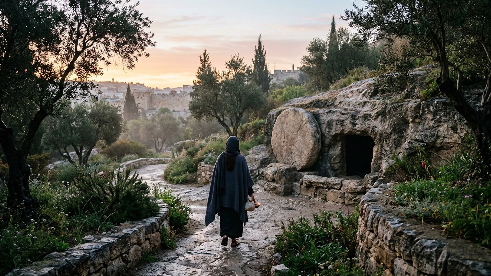
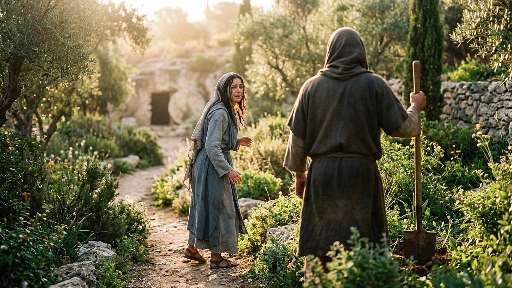

Salle 60 — Jean 20 ACCOMPLIE
Marie de Magdala : « je l’ai vu »
« Je suis monté vers mon Père et votre Père, vers mon Dieu et votre Dieu. » — Jean 20:17 (d’après Segond 1910)
Reconstitution numérique — Marie de Magdala approche du tombeau dans la première lumière : la Pierre est déjà écartée.
Une fidèle de Galilée, la première au tombeau
Marie dite « de Magdala » — du village de Magdala (en hébreu translittéré : Migdal, la tour), sur la rive occidentale de la mer de Galilée — suit Jésus depuis la Galilée : Luc la cite parmi les femmes qui assistaient le groupe de leurs biens, après qu’elle a été délivrée de « sept démons » (Luc 8:2-3). Elle est là lors de la mise à mort, elle regarde où le corps est déposé, et le premier jour de la semaine, « de grand matin, comme il faisait encore obscur », elle vient au tombeau — seule en tête du récit de Jean — et voit la Pierre enlevée (Jean 20:1). Dans la lecture retenue par ce musée, Marie de Magdala est la figure de la fidélité qui arrive avant la compréhension : elle court alerter Pierre, reste près du tombeau quand les disciples repartent, pleure, se penche, dialogue avec celui qu’elle prend pour le jardinier — et devient, chargée d’une phrase à transmettre, la première messagère de la résurrection auprès des apôtres eux-mêmes.
Le musée la distingue soigneusement des autres Marie des Évangiles — Marie, mère de Jésus, et Marie de Béthanie, sœur de Lazare (salle 53) — et d’une confusion célèbre née plus tard en Occident, qui en fit à tort la « pécheresse » de Luc 7. Son matin au jardin est présenté ci-dessous avec ses lieux débattus et les récits parallèles.
Le récit en cinq temps
De l’aube obscure au nom prononcé, avancez d’une station à l’autre.

Le banc des preuves : deux tombeaux célèbres, un matin raconté quatre fois
DÉBATTU
Le lieu du tombeau : Saint-Étienne et « Tombeau du Jardin » (EV-69)
Deux lieux de Jérusalem concentrent la mémoire de ce matin. Vérifié : l’Église du Saint-Sépulcre (translittération : Église de la Résurrection), dans la vieille ville, est construite sur un site vénéré et fouillé depuis le IVᵉ siècle, avec des tombes anciennes dans son périmètre ; au nord des murailles, le « Tombeau du Jardin », identifié seulement au XIXᵉ siècle et choyé pour son cadre de jardin, contient une tombe taillée dont plusieurs spécialistes datent la taille bien avant le Iᵉʳ siècle. Débattu : la localisation exacte de l’enterrement, impossible à démontrer archeologiquement pour un tombeau précis. La salle présente donc les deux lieux comme des lieux de mémoire, non comme une adresse prouvée, et ne couronne ni l’un ni l’autre.
LECTURE PROPHÉTIQUE
Une femme envoyée annoncer aux apôtres
Le mouvement du récit est unique : ce n’est pas un apôtre qui vient consoler Marie, c’est elle qui est envoyée vers eux — « va trouver mes frères, et dis-leur… » — et elle arrive avec une annonce au passé composé de témoin oculaire : « J’ai vu le Seigneur. » Dans un monde antique où la parole des femmes pesait peu devant les tribunaux, les quatre Évangiles s’accordent à placer des femmes — et Jean, Marie de Magdala seule au premier plan — au commencement de l’annonce pascale ; Luc note même crûment que les apôtres prirent d’abord leur récit pour des « radotages » (Luc 24:11, traduction sobre). Le musée lit cette constance embarrassée comme la marque du récit, non comme un ornement.
DÉBATTU
Quatre récits, des trames qui divergent — et une absence remarquée
Matthieu fait rencontrer Jésus à Marie de Magdala et « l’autre Marie » sur le chemin du retour ; Jean la laisse seule au jardin ; Luc multiplie les femmes et les anges sans apparition à Marie ; la fin longue de Marc (16:9), textuellement débattue, dit aussi « il apparut d’abord à Marie de Magdala ». En revanche, le sommaire ancien cité par Paul (1 Corinthiens 15:5-8) énumère Céphas (translittération : Kēphâs, Pierre) et les Douze sans nommer aucune femme : les spécialistes débattent de cette absence — résumé officiel abrégé, conventions de témoins, ou transmission sélective. La salle expose ce contraste, sans harmoniser ni effacer l’écart.
Quatre clés pour bien écouter Marie de Magdala
1. Trois Marie, une seule Magdaléenne
Les Évangiles nomment plusieurs Marie : la mère de Jésus, Marie de Béthanie (salle 53), Marie mère de Jacques, et Marie de Magdala, identifiée par son village, jamais par une faute. En 591 de notre ère, le prédicateur Grégoire de Rome (translittération latine : Gregorius) la confond dans une homélie avec la pécheresse anonyme de Luc 7 et avec Marie de Béthanie : l’Occident hérite d’une « pécheresse repentie », que l’Orient chrétien n’a pas connue et que les textes ne fondent pas. La salle rend à Magdala son seul portrait documenté : une disciple fidèle, présente du ministère galiléen jusqu’au tombeau.
2. Une reconnaissance par le nom, pas par les yeux
Marie voit sans reconnaître : deux anges, puis l’homme du jardin, sans que rien se déclenche — exactement les yeux « empêchés » d’Emmaüs (salle 58) et à rebours du voir exigé par Thomas (salle 57). Tout bascule sur un mot : son nom prononcé. Le récit de Jean s’était préparé lui-même : le berger « appelle ses brebis par leur nom » (Jean 10:3), et Lazare avait été appelé par le sien hors du tombeau (11:43). Celle qui cherchait un corps à emporter est trouvée la première.
3. « Ne me retiens pas » : une mission au lieu d’une étreinte
La parole de Jésus ressuscité (Jean 20:17) a reçu bien des lectures — pudeur, temps de l’ascension, nouvelle relation annoncée — et la phrase qui suit tranche vers l’avenir : « je monte vers mon Père et votre Père, vers mon Dieu et votre Dieu. » Le musée retient le geste du récit : Marie n’est pas renvoyée à son deuil ni gardée au jardin ; elle est mise en route vers « mes frères », titre que Jésus donne ici aux disciples pour la première fois dans cet Évangile, au matin même où l’un d’eux l’avait renié (salle 55).
4. Celle qui a couru deux fois
Marie de Magdala est la grande coureuse de ce matin : elle court du tombeau vers Pierre aux premières minutes (20:2), puis — dans la lecture du récit de Jean complétée par la tradition qui la dira « apôtre des apôtres » — elle repart vers les frères chargée de l’annonce. Entre les deux courses, elle a pleuré, demandé, attendu. La salle y voit le portrait d’un témoignage qui n’attend pas d’être rassuré pour bouger : elle court d’abord avec un tombeau vide, puis avec un nom entendu.
Prescience n’est pas fatalité — elle cherchait ailleurs
Marie de Magdala arrive avec un projet précis — retrouver un corps, l’emporter, achever les rites — et passe à côté de l’événement en le cherchant où il n’est plus : « si c’est toi qui l’as emporté, dis-moi où tu l’as mis. » Rien n’était écrit dans ses gestes : elle pouvait repartir avec les disciples. C’est en restant, en pleurant et en se retournant qu’elle devient la première envoyée : le témoignage ne tombe pas sur les mieux informés, mais sur celle qui est restée libre de se retourner.
Salle 39 : la résurrection dont elle est la première témoin · Salle 57 : huit jours plus tard, le doute de Thomas · Salle 58 : le même jour, d’autres yeux ouverts autrement
Écouter la salle
Transcription de la narration
Bienvenue dans cette nouvelle salle. Vous verrez d’abord un jardin au lever du jour, un sentier humide et une tombe creusée dans le roc, puis une femme qui se retourne près des oliviers. Je vous souhaite une très bonne visite du musée. La visite avance en cinq étapes courtes. Prenez le temps d’observer chaque image et de lire les panneaux : ils présentent une arrivée avant l’aube, deux lieux célèbres que l’on compare depuis longtemps, et les questions que les spécialistes débattent encore. Merci de votre attention.